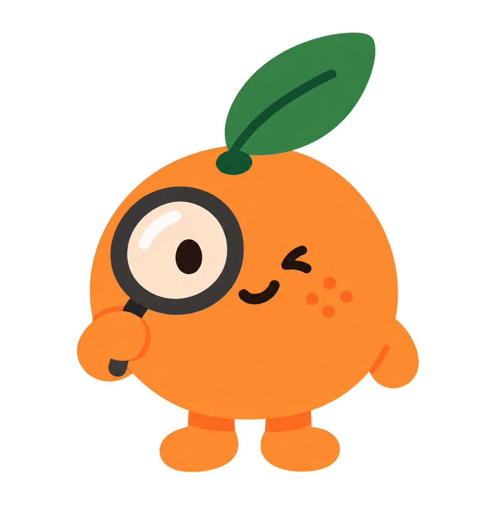
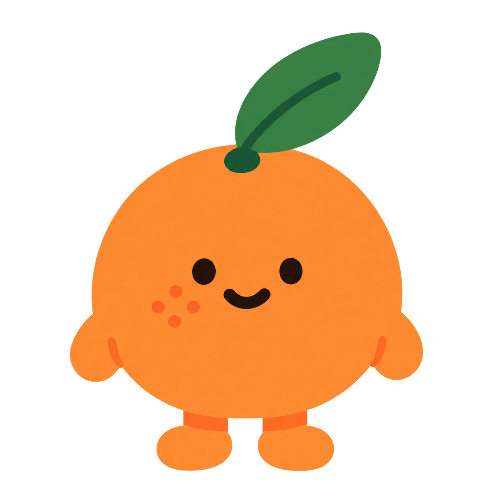
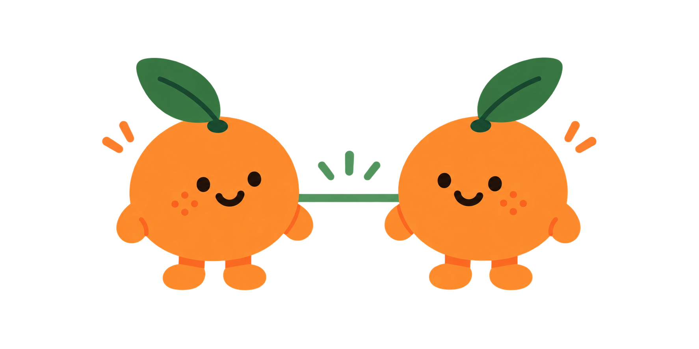
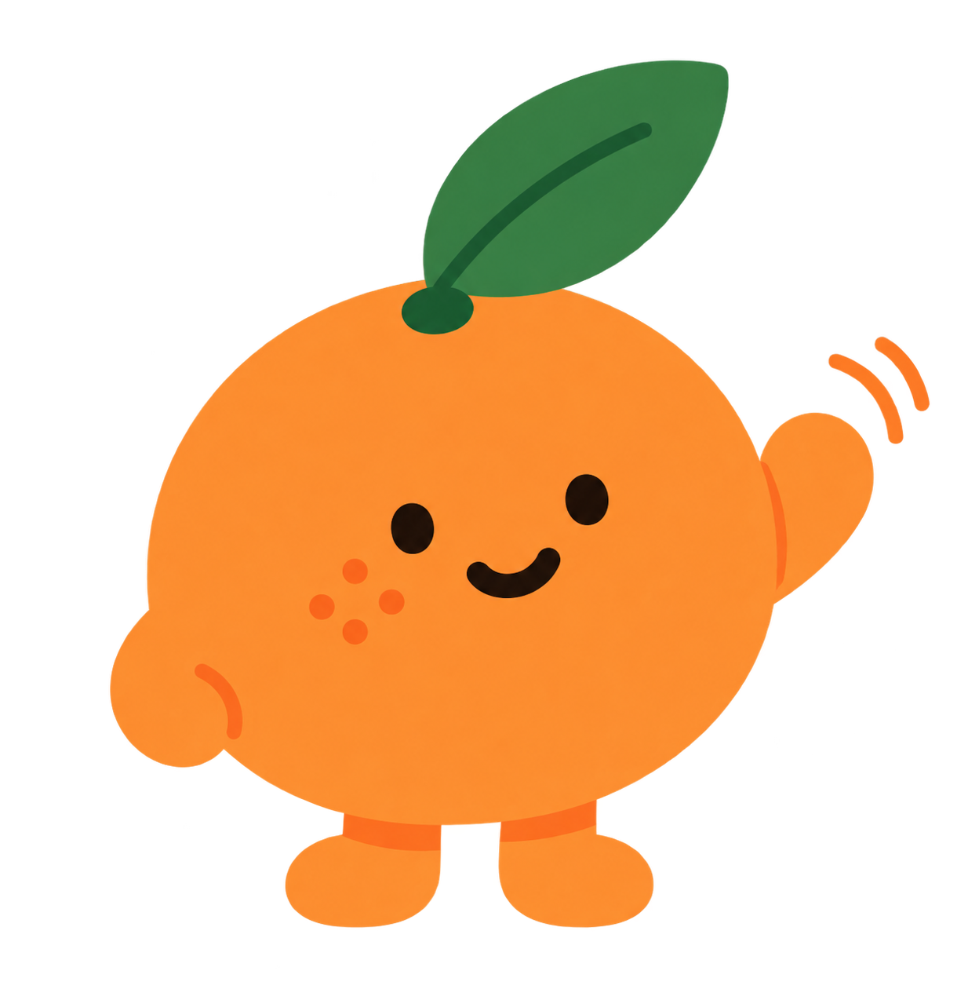
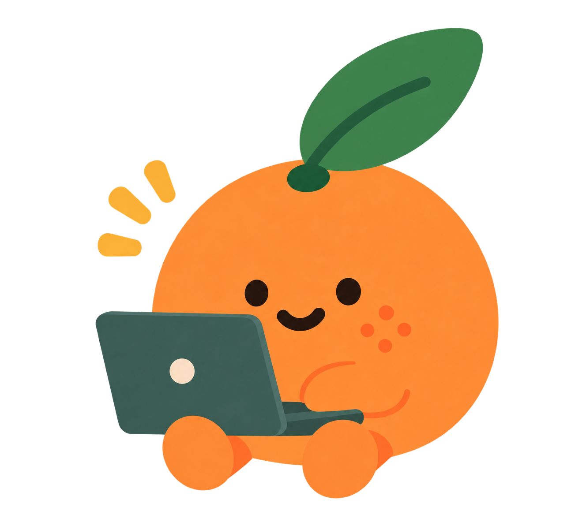
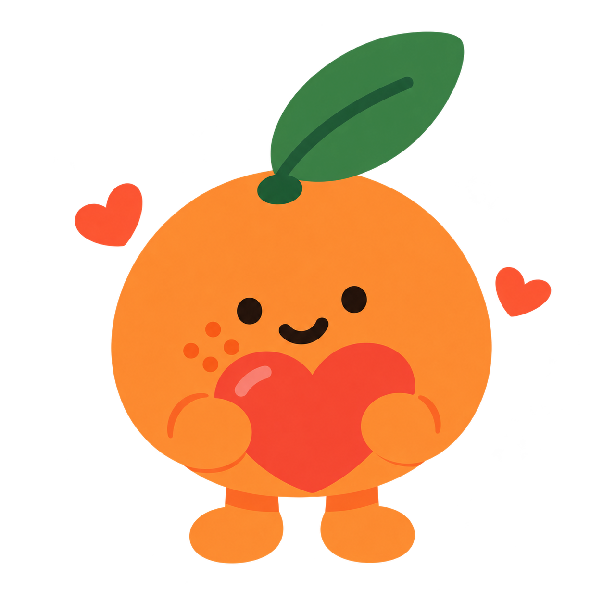

01 · 첫 화면
서비스의 의미를 한눈에

?나는 누구와 건너건너
아는 사이일까?
아는 사람들과 이어지다 보면
생각지도 못한 사람과 닿을지도 몰라요.
시작해보기
세상은 생각보다 좁대요
몇 사람만 거치면 세상 누구와도
이어질 수 있다는 이야기가 있어요.
몇 사람만 거치면 세상 누구와도
이어질 수 있다는 이야기가 있어요.
사람과 사람을 연결하고, 세상이 얼마나 가까운지 발견하는 서비스
connect.png로 두 감귤이 직접 이어진 상태를 보여준다. 기본 행동은 "나도 아는 사람에게 보내기", 보조 행동은 "이어진 사람 보기 →"로 구분한다.화면 01 – 12 · TASK-003 반영 시안
01 · 첫 화면
서비스의 의미를 한눈에

?나는 누구와 건너건너
아는 사이일까?
아는 사람들과 이어지다 보면
생각지도 못한 사람과 닿을지도 몰라요.
02 · 로그인·표시 이름
한 사람을 하나의 노드로 식별

먼저, 나를 알려주세요
내가 아는 사람들과 이어지려면
로그인이 필요해요.
로그인은 나를 구분하기 위해서만 사용해요.
어떤 이름으로
불릴까요?
아는 사람에게 보여줄 이름을 적어주세요.
실명이 아니어도 괜찮아요.
03 · 지인 연결
실제 관계 만들기 (재사용 링크)
실제로 아는 사람에게
이 링크를 보내보세요.
서로 아는 사이라고 확인하면 바로 이어져요.
실제로 아는 사람에게만 보내주세요.
이어진 사람 보기 →
04 · 지인 확인
가짜 연결 방지
수연님을
알고 있나요?
실제로 아는 사이라면 알려주세요.
05 · 연결 완료
첫 보상 + 전파

수연님과
연결됐어요.
이제 서로 아는 사이로 이어졌어요.
06 · 내 연결 (메인)
관계가 자라는 재미
여기서부터 이어져요
아는 사람들이 하나둘 참여하면
건너건너 이어진 사이도 나타나요.
실제로 아는 사이를 확인해요.
나와 건너건너 얼마나 가까운지 확인해요.
몇 다리인지 확인해볼까요?
이 링크를 공유하면
나와 몇 다리 건너 아는 사이인지 확인할 수 있어요.
08 · 공개 링크 진입
모르는 사람도 참여
수연님과 나는
몇 다리 건너 아는 사이일까?
서로 모르는 사이여도 생각보다 가까울 수 있어요.
09 · 연결 발견
핵심 경험 (WOW)
생각보다
가까웠어요.

나 · · · · 상대
두 사람을 거치면 서로 닿아요.
10 · 연결 미발견
실패가 아니라 새로운 시작

아직 이어지지 않았어요.
지금까지의 연결에서는 서로를 잇는 경로를 찾지 못했어요. 내 주변의 연결이 늘어나면 결과가 달라질 수 있어요.
11 · 공유 카드
외부 바이럴 (예시)
생각보다
가까운 사이예요.

두 사람을 거치면 서로 닿아요.
가이 알아?
12 · (별도) 연결된 세상
일정 규모 이상에서만 제공
지금은 준비 중이에요.
더 많은 사람들이 모이면
연결된 세상을 보여드릴게요.
12번은 참여자가 일정 규모 이상이 되면 잠금이 풀리고 실제 전체 그래프(Obsidian식 뷰)가 열린다 — 기준선은 구현 단계에서 정한다.